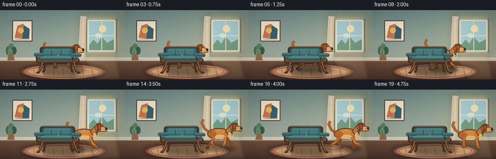
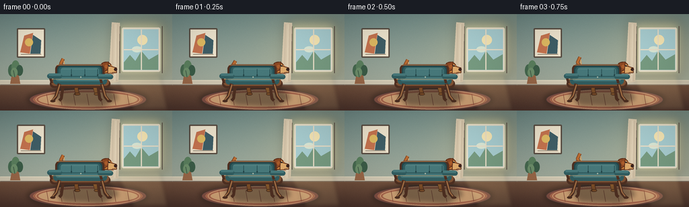
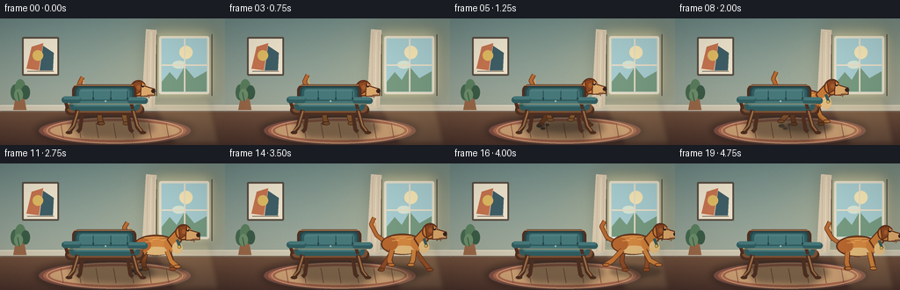
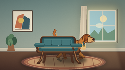
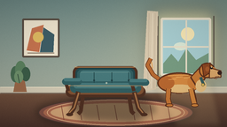
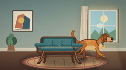
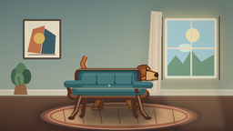

CODING AGENTS AS PIXEL WORLD MODELS
traex/DeepSeek-V4.1-Flash · dynamic_spatial_relationship_0005
点击播放 · 原生 RGB 像素
此结果可播放，但该运行尚未通过最终提交审核。页面展示不代表评测通过。
逐轮保存的候选
回放视频、检查图与代码变化。
每份候选均可单独播放。实际图片检查记录在下方工具轨迹中。
候选 01播放与检查图
点击播放 · 原生 RGB 像素


展开代码变化
--- 上一保存版本
+++ 本次保存版本
@@ -0,0 +1,489 @@
+from __future__ import annotations
+
+import math
+from pathlib import Path
+
+import numpy as np
+from PIL import Image, ImageDraw, ImageFilter
+
+import artifact_io
+
+
+WIDTH = 256
+HEIGHT = 144
+FRAMES = 20
+FPS = 4.0
+SS = 4
+
+
+def srgb(hex_value: str) -> tuple[int, int, int]:
+ value = hex_value.lstrip("#")
+ return tuple(int(value[i : i + 2], 16) for i in (0, 2, 4))
+
+
+def mix(a, b, amount):
+ amount = max(0.0, min(1.0, amount))
+ return tuple(round(x * (1.0 - amount) + y * amount) for x, y in zip(a, b))
+
+
+def scaled(value: float) -> int:
+ return max(1, int(round(value * SS)))
+
+
+def ellipse(draw, box, fill, outline=None, width=0):
+ draw.ellipse(tuple(scaled(v) for v in box), fill=fill, outline=outline, width=scaled(width) if width else 0)
+
+
+def rounded(draw, box, radius, fill, outline=None, width=0):
+ draw.rounded_rectangle(
+ tuple(scaled(v) for v in box),
+ radius=scaled(radius),
+ fill=fill,
+ outline=outline,
+ width=scaled(width) if width else 0,
+ )
+
+
+def polygon(draw, points, fill, outline=None, width=0):
+ draw.polygon([(scaled(x), scaled(y)) for x, y in points], fill=fill)
+ if outline and width:
+ line(draw, points + [points[0]], outline, width)
+
+
+def line(draw, points, fill, width=1):
+ draw.line(
+ [(scaled(x), scaled(y)) for x, y in points],
+ fill=fill,
+ width=scaled(width),
+ joint="curve",
+ )
+
+
+def blur_layer(size, draw_fn, blur):
+ layer = Image.new("RGBA", size, (0, 0, 0, 0))
+ draw_fn(ImageDraw.Draw(layer))
+ return layer.filter(ImageFilter.GaussianBlur(scaled(blur)))
+
+
+def make_background(size):
+ width, height = size
+ yy, xx = np.mgrid[0:height, 0:width]
+ xn = xx / width
+ yn = yy / height
+
+ top = np.array(srgb("#718c88"), dtype=np.float32)
+ bottom = np.array(srgb("#b7b9a5"), dtype=np.float32)
+ wall = top[None, None, :] * (1 - yn[:, :, None]) + bottom[None, None, :] * yn[:, :, None]
+
+ glow = np.exp(-(((xn - 0.83) / 0.30) ** 2 + ((yn - 0.36) / 0.42) ** 2))
+ warm = np.array(srgb("#f6d99a"), dtype=np.float32)
+ wall = wall * (1 - 0.25 * glow[:, :, None]) + warm[None, None, :] * (0.25 * glow[:, :, None])
+
+ floor_start = int(0.72 * height)
+ floor_mask = yy >= floor_start
+ floor_grad = np.clip((yy - floor_start) / (height - floor_start), 0, 1)
+ floor_top = np.array(srgb("#76543f"), dtype=np.float32)
+ floor_bottom = np.array(srgb("#4d342c"), dtype=np.float32)
+ floor = floor_top[None, None, :] * (1 - floor_grad[:, :, None]) + floor_bottom[None, None, :] * floor_grad[:, :, None]
+ wall[floor_mask] = floor[floor_mask]
+
+ rng = np.random.default_rng(11)
+ grain = rng.normal(0, 1.8, (height, width, 1))
+ wall = np.clip(wall + grain, 0, 255)
+ image = Image.fromarray(wall.astype(np.uint8), "RGB")
+ draw = ImageDraw.Draw(image)
+
+ # Floor boards and subtle perspective.
+ for y in np.linspace(0.735, 1.0, 8) * height:
+ line(draw, [(0, y), (width, y + 4 * SS)], (64, 43, 36, 145), 0.65)
+ for x in np.linspace(-0.1, 1.1, 13) * width:
+ line(draw, [(x, 0.72 * height), (0.5 * width + (x - 0.5 * width) * 1.8, height)], (91, 63, 48, 90), 0.5)
+
+ # Baseboard.
+ draw.rectangle((0, scaled(99), width, scaled(106)), fill=(211, 202, 180))
+ line(draw, [(0, 98.7), (256, 98.7)], (241, 230, 203, 210), 0.8)
+ line(draw, [(0, 105.5), (256, 105.5)], (83, 66, 57, 180), 0.7)
+
+ # Window and daylight.
+ glow_layer = blur_layer(
+ size,
+ lambda d: d.rounded_rectangle(
+ (scaled(168), scaled(9), scaled(246), scaled(94)),
+ radius=scaled(9),
+ fill=(255, 230, 160, 95),
+ ),
+ 8,
+ )
+ image = Image.alpha_composite(image.convert("RGBA"), glow_layer).convert("RGB")
+ draw = ImageDraw.Draw(image)
+ rounded(draw, (181, 20, 238, 86), 2.5, srgb("#bdd6d4"), srgb("#e8dfc8"), 2.5)
+ rounded(draw, (184, 23, 235, 83), 1.5, srgb("#a9ced1"))
+ polygon(draw, [(184, 72), (193, 61), (201, 70), (210, 55), (221, 68), (235, 60), (235, 83), (184, 83)], srgb("#789c82"))
+ ellipse(draw, (204, 31, 219, 46), srgb("#f7e7b5"))
+ ellipse(draw, (196, 48, 211, 57), srgb("#dbe8d6"))
+ line(draw, [(210, 23), (210, 83)], srgb("#e9dfc8"), 1.7)
+ line(draw, [(184, 53), (235, 53)], srgb("#e9dfc8"), 1.7)
+ line(draw, [(178, 18), (178, 88)], srgb("#594f45"), 1.2)
+ line(draw, [(241, 18), (241, 88)], srgb("#594f45"), 1.2)
+
+ # Linen curtain with soft folds.
+ polygon(draw, [(166, 12), (178, 13), (176, 101), (161, 104)], srgb("#d8c8ad"))
+ for x, shade in [(168, "#c7b69d"), (172, "#eadcc2"), (175, "#cbb9a0")]:
+ line(draw, [(x, 15), (x - 1.5, 100)], srgb(shade), 0.8)
+
+ # Framed abstract print on the left wall.
+ rounded(draw, (25, 21, 67, 65), 1.5, srgb("#f0e6cf"), srgb("#594d42"), 2.0)
+ polygon(draw, [(30, 57), (36, 32), (49, 28), (44, 59)], srgb("#c87550"))
+ polygon(draw, [(45, 59), (49, 31), (61, 39), (60, 59)], srgb("#405f67"))
+ ellipse(draw, (37, 36, 49, 48), srgb("#e2bc63"))
+ line(draw, [(31, 60), (61, 60)], srgb("#6d5b4a"), 0.7)
+
+ # Small leafy plant adds depth at the far left.
+ polygon(draw, [(15, 104), (30, 104), (27, 88), (18, 88)], srgb("#9b6949"))
+ for cx, cy, rx, ry, color in [
+ (17, 84, 5, 9, "#486b51"),
+ (23, 79, 6, 10, "#5c815f"),
+ (29, 84, 5, 8, "#3c5d48"),
+ (21, 87, 5, 7, "#6f916c"),
+ ]:
+ ellipse(draw, (cx - rx, cy - ry, cx + rx, cy + ry), srgb(color))
+ line(draw, [(22, 94), (20, 84)], srgb("#3d5844"), 1.1)
+
+ # Oval rug: muted rust and ink-blue border.
+ shadow = blur_layer(
+ size,
+ lambda d: ellipse(d, (41, 109, 219, 145), (38, 31, 27, 115)),
+ 4,
+ )
+ image = Image.alpha_composite(image.convert("RGBA"), shadow).convert("RGB")
+ draw = ImageDraw.Draw(image)
+ ellipse(draw, (43, 111, 218, 144), srgb("#815044"), srgb("#4e3932"), 1.2)
+ ellipse(draw, (49, 114, 212, 141), srgb("#ad6b50"))
+ ellipse(draw, (57, 117, 204, 138), srgb("#d1a477"))
+ for x in (69, 89, 109, 129, 149, 169, 189):
+ line(draw, [(x, 119), (x + 3, 136)], (133, 76, 58, 125), 0.7)
+ ellipse(draw, (53, 113, 208, 142), None, (238, 195, 147, 180), 0.7)
+
+ # Warm sun patch across the floor.
+ sun = Image.new("RGBA", size, (0, 0, 0, 0))
+ sd = ImageDraw.Draw(sun)
+ sd.polygon(
+ [
+ (scaled(171), scaled(93)),
+ (scaled(238), scaled(91)),
+ (scaled(250), scaled(143)),
+ (scaled(198), scaled(143)),
+ ],
+ fill=(255, 223, 157, 34),
+ )
+ sun = sun.filter(ImageFilter.GaussianBlur(scaled(3)))
+ return Image.alpha_composite(image.convert("RGBA"), sun)
+
+
+def draw_tail(draw, cx, cy, scale, wag, running):
+ lift = -1.5 * running
+ points = [
+ (cx - 22 * scale, cy - 2 * scale),
+ (cx - 33 * scale, cy - 10 * scale + wag),
+ (cx - 40 * scale, cy - 22 * scale + wag + lift),
+ (cx - 36 * scale, cy - 30 * scale + 1.4 * wag + lift),
+ ]
+ line(draw, points, srgb("#713c20"), 5.3 * scale)
+ line(draw, points, srgb("#b86a31"), 3.7 * scale)
+ line(draw, [(cx - 34 * scale, cy - 18 * scale + wag), (cx - 35 * scale, cy - 26 * scale + 1.2 * wag)], srgb("#e1a15b"), 1.4 * scale)
+
+
+def draw_dog_leg(draw, x0, y0, x1, y1, paw_x, paw_y, color, back=False):
+ width = 4.7 if not back else 4.2
+ line(draw, [(x0, y0), (x1, y1), (paw_x, paw_y)], srgb("#5a2e1a"), width + 1.4)
+ line(draw, [(x0, y0), (x1, y1), (paw_x, paw_y)], srgb(color), width)
+ ellipse(draw, (paw_x - 4.0, paw_y - 1.8, paw_x + 4.3, paw_y + 2.2), srgb(color), srgb("#5a2e1a"), 0.7)
+
+
+def draw_dog(image, cx, cy, scale, phase, running, wag):
+ draw = ImageDraw.Draw(image)
+ if running:
+ # Soft floor contact shadow.
+ shadow = blur_layer(
+ image.size,
+ lambda d: ellipse(d, (cx - 30 * scale, 117, cx + 34 * scale, 129), (38, 31, 25, 100)),
+ 2.3,
+ )
+ image.alpha_composite(shadow)
+ draw = ImageDraw.Draw(image)
+
+ gait = math.sin(phase)
+ gait2 = math.sin(phase + math.pi)
+ run_amount = 1.0 if running else 0.0
+ lift = 4.0 * run_amount
+
+ # Far legs, drawn first.
+ if running:
+ draw_dog_leg(
+ draw,
+ cx - 13 * scale,
+ cy + 8 * scale,
+ cx - 18 * scale + 3.0 * gait2,
+ cy + 21 * scale,
+ cx - 19 * scale + 8.0 * gait2,
+ 119 + 1.5 * abs(gait2),
+ "#8f4d25",
+ back=True,
+ )
+ draw_dog_leg(
+ draw,
+ cx + 15 * scale,
+ cy + 8 * scale,
+ cx + 20 * scale + 3.0 * gait,
+ cy + 20 * scale,
+ cx + 24 * scale + 8.0 * gait,
+ 119 + 1.5 * abs(gait),
+ "#965027",
+ back=True,
+ )
+ else:
+ draw_dog_leg(draw, cx - 13 * scale, cy + 7 * scale, cx - 15 * scale, cy + 20 * scale, cx - 14 * scale, 119, "#8f4d25", back=True)
+ draw_dog_leg(draw, cx + 14 * scale, cy + 7 * scale, cx + 17 * scale, cy + 20 * scale, cx + 18 * scale, 119, "#965027", back=True)
+
+ draw_tail(draw, cx, cy, scale, wag, run_amount)
+
+ # Main body.
+ body_box = (cx - 28 * scale, cy - 13 * scale, cx + 25 * scale, cy + 13 * scale)
+ ellipse(draw, body_box, srgb("#c37735"), srgb("#63341e"), 1.8)
+ ellipse(draw, (cx - 20 * scale, cy - 8 * scale, cx + 19 * scale, cy + 8 * scale), srgb("#d68a42"))
+ ellipse(draw, (cx - 18 * scale, cy + 2 * scale, cx + 18 * scale, cy + 12 * scale), srgb("#e4bb7c"))
+
+ # Shoulder and haunch shading.
+ ellipse(draw, (cx + 9 * scale, cy - 10 * scale, cx + 27 * scale, cy + 8 * scale), srgb("#cf7f3a"))
+ ellipse(draw, (cx - 26 * scale, cy - 8 * scale, cx - 7 * scale, cy + 8 * scale), srgb("#b96830"))
+ line(draw, [(cx - 15 * scale, cy - 9 * scale), (cx + 10 * scale, cy - 10 * scale)], (242, 173, 95, 170), 1.0)
+
+ # Neck, head, muzzle, and cream chest.
+ neck = [
+ (cx + 13 * scale, cy - 7 * scale),
+ (cx + 25 * scale, cy - 20 * scale),
+ (cx + 36 * scale, cy - 14 * scale),
+ (cx + 22 * scale, cy + 7 * scale),
+ ]
+ polygon(draw, neck, srgb("#c87b37"), srgb("#63341e"), 1.4)
+ ellipse(draw, (cx + 19 * scale, cy - 4 * scale, cx + 32 * scale, cy + 11 * scale), srgb("#e6bf82"))
+ ellipse(draw, (cx + 23 * scale, cy - 25 * scale, cx + 43 * scale, cy - 6 * scale), srgb("#cc7e39"), srgb("#63341e"), 1.6)
+ ellipse(draw, (cx + 29 * scale, cy - 20 * scale, cx + 45 * scale, cy - 9 * scale), srgb("#d98e47"))
+ muzzle = [
+ (cx + 36 * scale, cy - 19 * scale),
+ (cx + 50 * scale, cy - 15 * scale),
+ (cx + 50 * scale, cy - 7 * scale),
+ (cx + 36 * scale, cy - 6 * scale),
+ ]
+ polygon(draw, muzzle, srgb("#dda96b"), srgb("#63341e"), 1.3)
+ ellipse(draw, (cx + 46 * scale, cy - 15 * scale, cx + 51 * scale, cy - 10 * scale), srgb("#3b231d"))
+ line(draw, [(cx + 43 * scale, cy - 7.5 * scale), (cx + 48 * scale, cy - 8.5 * scale)], srgb("#6b3d2a"), 0.8)
+
+ # Floppy ear and face details.
+ ear = [
+ (cx + 27 * scale, cy - 23 * scale),
+ (cx + 37 * scale, cy - 25 * scale),
+ (cx + 36 * scale, cy - 12 * scale),
+ (cx + 29 * scale, cy - 8 * scale),
+ ]
+ polygon(draw, ear, srgb("#8d4823"), srgb("#5a2d19"), 1.1)
+ ellipse(draw, (cx + 31 * scale, cy - 20 * scale, cx + 36 * scale, cy - 14 * scale), srgb("#a95c2c"))
+ ellipse(draw, (cx + 37 * scale, cy - 20 * scale, cx + 40 * scale, cy - 17 * scale), srgb("#2e211d"))
+ ellipse(draw, (cx + 38 * scale, cy - 20 * scale, cx + 39 * scale, cy - 19 * scale), srgb("#f7e5bb"))
+ line(draw, [(cx + 41 * scale, cy - 6 * scale), (cx + 45 * scale, cy - 5 * scale)], srgb("#8b4c2c"), 0.7)
+
+ # Collar.
+ line(
+ draw,
+ [(cx + 25 * scale, cy - 7 * scale), (cx + 29 * scale, cy + 3 * scale)],
+ srgb("#355b5d"),
+ 3.2 * scale,
+ )
+ ellipse(draw, (cx + 26 * scale, cy + 0.2 * scale, cx + 30 * scale, cy + 4.2 * scale), srgb("#d8b65c"), srgb("#795f2d"), 0.6)
+
+ # Near legs.
+ if running:
+ draw_dog_leg(
+ draw,
+ cx - 14 * scale,
+ cy + 7 * scale,
+ cx - 22 * scale + 4.0 * gait,
+ cy + 20 * scale,
+ cx - 25 * scale + 9.0 * gait,
+ 119 - lift * abs(gait),
+ "#c37435",
+ )
+ draw_dog_leg(
+ draw,
+ cx + 13 * scale,
+ cy + 7 * scale,
+ cx + 16 * scale + 4.0 * gait2,
+ cy + 20 * scale,
+ cx + 20 * scale + 10.0 * gait2,
+ 119 - lift * abs(gait2),
+ "#d0843d",
+ )
+ else:
+ draw_dog_leg(draw, cx - 14 * scale, cy + 7 * scale, cx - 15 * scale, cy + 20 * scale, cx - 13 * scale, 119, "#c37435")
+ draw_dog_leg(draw, cx + 13 * scale, cy + 7 * scale, cx + 16 * scale, cy + 20 * scale, cx + 18 * scale, 119, "#d0843d")
+
+ # A few directional fur accents keep the silhouette readable at low resolution.
+ for ox, oy, length in [(-14, -4, 9), (-5, -7, 8), (5, -6, 7)]:
+ line(
+ draw,
+ [(cx + ox * scale, cy + oy * scale), (cx + (ox + length) * scale, cy + (oy - 1) * scale)],
+ (247, 187, 109, 130),
+ 0.75,
+ )
+ return image
+
+
+def draw_chair(image):
+ size = image.size
+ draw = ImageDraw.Draw(image)
+
+ shadow = blur_layer(
+ size,
+ lambda d: polygon(
+ d,
+ [(78, 119), (91, 107), (160, 108), (177, 125), (151, 139), (94, 136)],
+ (36, 31, 26, 125),
+ ),
+ 3.8,
+ )
+ image.alpha_composite(shadow)
+ draw = ImageDraw.Draw(image)
+
+ wood = srgb("#6f482f")
+ wood_dark = srgb("#4f3022")
+ wood_light = srgb("#a47146")
+ teal = srgb("#315d60")
+ teal_light = srgb("#47787a")
+ teal_dark = srgb("#23484c")
+
+ # Rear legs.
+ line(draw, [(94, 105), (91, 126), (88, 129)], wood_dark, 4.2)
+ line(draw, [(145, 105), (148, 126), (151, 129)], wood_dark, 4.2)
+
+ # Chair back frame and upholstered back.
+ rounded(draw, (82, 75, 155, 105), 7, wood_dark)
+ rounded(draw, (85, 77, 152, 101), 5.5, teal_dark)
+ rounded(draw, (87, 79, 150, 100), 4.5, teal)
+ rounded(draw, (90, 80, 147, 92), 4, teal_light)
+ line(draw, [(91, 82), (146, 82)], (93, 137, 135, 150), 0.8)
+
+ # Back cushion seams.
+ for x in (106, 126, 145):
+ line(draw, [(x, 82), (x, 98)], (31, 67, 70, 165), 0.7)
+ for x, y in [(106, 91), (126, 91), (145, 91)]:
+ ellipse(draw, (x - 1.1, y - 1.1, x + 1.1, y + 1.1), srgb("#203f43"))
+
+ # Seat, with a narrow wood lip.
+ rounded(draw, (74, 98, 164, 110), 7, wood_dark)
+ rounded(draw, (76, 96, 162, 107), 6, srgb("#7f5234"))
+ rounded(draw, (79, 94, 159, 105), 5.2, teal)
+ rounded(draw, (83, 94, 155, 100), 4, teal_light)
+ line(draw, [(87, 98), (151, 98)], (96, 140, 137, 130), 0.7)
+
+ # Front legs, slightly splayed, with small highlights.
+ for x_top, x_mid, x_bottom in [(88, 83, 78), (151, 156, 162)]:
+ line(draw, [(x_top, 104), (x_mid, 123), (x_bottom, 130)], wood_dark, 5.1)
+ line(draw, [(x_top + 0.7, 105), (x_mid + 0.4, 122), (x_bottom - 0.4, 128.5)], wood_light, 1.8)
+ ellipse(draw, (x_bottom - 3.5, 128, x_bottom + 4.2, 131.4), wood_dark)
+
+ # Armrests.
+ for x0, x1 in [(72, 91), (146, 166)]:
+ line(draw, [(x0, 92), (x1, 93)], wood_dark, 4.8)
+ line(draw, [(x0 + 1, 91), (x1 - 1, 92)], wood_light, 1.3)
+ line(draw, [(x0 + 2, 93), (x0 + 5, 103)], wood_dark, 3.7)
+ rounded(draw, (70, 89, 92, 96), 3.5, teal)
+ rounded(draw, (145, 90, 168, 97), 3.5, teal)
+ rounded(draw, (72, 88.5, 91, 92), 2.5, teal_light)
+ rounded(draw, (146, 89.5, 166, 93), 2.5, teal_light)
+
+ # Wood and fabric highlights.
+ line(draw, [(84, 76), (152, 76)], (196, 144, 91, 125), 0.8)
+ line(draw, [(77, 97), (160, 97)], (210, 158, 103, 100), 0.6)
+ ellipse(draw, (119, 93, 121, 95), srgb("#a7b8a8"))
+ return image
+
+
+def draw_motion_details(image, frame, dog_x, running):
+ draw = ImageDraw.Draw(image)
+ if not running:
+ return image
+ strength = math.sin(math.pi * min(1.0, max(0.0, (frame - 4) / 12.0)))
+ if strength <= 0.05:
+ return image
+
+ # A few restrained speed strokes behind the dog.
+ for i, (dy, length) in enumerate([(-3, 12), (4, 9), (11, 7)]):
+ x0 = dog_x - 42 - i * 3
+ x1 = x0 - length * strength
+ line(draw, [(x0, 92 + dy), (x1, 92 + dy)], (232, 196, 139, int(70 * strength)), 0.8)
+
+ # Tiny dust puffs at the feet.
+ if 5 <= frame <= 12:
+ fade = 1.0 - abs(frame - 8) / 5.0
+ for ox, oy, r in [(-27, 122, 3.4), (-23, 125, 2.6), (-18, 121, 2.1)]:
+ ellipse(draw, (dog_x + ox - r, oy - r * 0.6, dog_x + ox + r, oy + r * 0.6), (203, 173, 132, int(55 * fade)))
+ return image
+
+
+def ease_in_out(value):
+ value = max(0.0, min(1.0, value))
+ return value * value * (3.0 - 2.0 * value)
+
+
+def render_frame(index, background):
+ frame = background.copy()
+ size = frame.size
+ frame = frame.convert("RGBA")
+
+ if index < 4:
+ progress = 0.0
+ elif index <= 16:
+ progress = ease_in_out((index - 4) / 12.0)
+ else:
+ progress = 1.0
+ running = 4 <= index <= 16
+
+ dog_x = 127 + 76 * progress
+ run_phase = (index - 4) * 1.42
+ bounce = -2.3 * abs(math.sin(run_phase)) if running else 0.0
+ dog_y = 94 + bounce
+ wag = 2.4 * math.sin(index * 1.32)
+ scale = 0.92
+
+ frame = draw_dog(frame, dog_x, dog_y, scale, run_phase, running, wag)
+ frame = draw_motion_details(frame, index, dog_x, running)
+ frame = draw_chair(frame)
+
+ # Gentle vignette and film grain make the low-resolution frames feel deliberate.
+ arr = np.asarray(frame.convert("RGB"), dtype=np.float32)
+ yy, xx = np.mgrid[0:size[1], 0:size[0]]
+ nx = (xx / size[0] - 0.5) * 2
+ ny = (yy / size[1] - 0.5) * 2
+ vignette = np.clip(1.0 - 0.09 * (nx * nx + ny * ny), 0.83, 1.0)
+ rng = np.random.default_rng(100 + index)
+ grain = rng.normal(0, 1.35, (size[1], size[0], 1))
+ arr = np.clip(arr * vignette[:, :, None] + grain, 0, 255).astype(np.uint8)
+ return Image.fromarray(arr, "RGB")
+
+
+def main():
+ case_dir = Path(__file__).resolve().parent
+ render_size = (WIDTH * SS, HEIGHT * SS)
+ background = make_background(render_size)
+
+ frames = []
+ for index in range(FRAMES):
+ image = render_frame(index, background)
+ image = image.resize((WIDTH, HEIGHT), Image.Resampling.LANCZOS)
+ frames.append(np.asarray(image, dtype=np.uint8))
+ artifact_io.save(frames, case_dir)
+ print(f"Saved {len(frames)} frames to {case_dir}")
+
+
+if __name__ == "__main__":
+ main()
候选 02播放与检查图
点击播放 · 原生 RGB 像素

展开代码变化
--- 上一保存版本
+++ 本次保存版本
@@ -90,7 +90,7 @@
rng = np.random.default_rng(11)
grain = rng.normal(0, 1.8, (height, width, 1))
wall = np.clip(wall + grain, 0, 255)
- image = Image.fromarray(wall.astype(np.uint8), "RGB")
+ image = Image.fromarray(wall.astype(np.uint8))
draw = ImageDraw.Draw(image)
# Floor boards and subtle perspective.
@@ -267,17 +267,17 @@
]
polygon(draw, neck, srgb("#c87b37"), srgb("#63341e"), 1.4)
ellipse(draw, (cx + 19 * scale, cy - 4 * scale, cx + 32 * scale, cy + 11 * scale), srgb("#e6bf82"))
- ellipse(draw, (cx + 23 * scale, cy - 25 * scale, cx + 43 * scale, cy - 6 * scale), srgb("#cc7e39"), srgb("#63341e"), 1.6)
- ellipse(draw, (cx + 29 * scale, cy - 20 * scale, cx + 45 * scale, cy - 9 * scale), srgb("#d98e47"))
+ ellipse(draw, (cx + 23 * scale, cy - 26 * scale, cx + 43 * scale, cy - 6 * scale), srgb("#cc7e39"), srgb("#63341e"), 1.6)
+ ellipse(draw, (cx + 29 * scale, cy - 21 * scale, cx + 45 * scale, cy - 9 * scale), srgb("#d98e47"))
muzzle = [
- (cx + 36 * scale, cy - 19 * scale),
- (cx + 50 * scale, cy - 15 * scale),
- (cx + 50 * scale, cy - 7 * scale),
+ (cx + 36 * scale, cy - 20 * scale),
+ (cx + 53 * scale, cy - 15 * scale),
+ (cx + 53 * scale, cy - 7 * scale),
(cx + 36 * scale, cy - 6 * scale),
]
polygon(draw, muzzle, srgb("#dda96b"), srgb("#63341e"), 1.3)
- ellipse(draw, (cx + 46 * scale, cy - 15 * scale, cx + 51 * scale, cy - 10 * scale), srgb("#3b231d"))
- line(draw, [(cx + 43 * scale, cy - 7.5 * scale), (cx + 48 * scale, cy - 8.5 * scale)], srgb("#6b3d2a"), 0.8)
+ ellipse(draw, (cx + 49 * scale, cy - 15 * scale, cx + 54 * scale, cy - 10 * scale), srgb("#3b231d"))
+ line(draw, [(cx + 44 * scale, cy - 7.5 * scale), (cx + 51 * scale, cy - 8.5 * scale)], srgb("#6b3d2a"), 0.8)
# Floppy ear and face details.
ear = [
@@ -290,7 +290,8 @@
ellipse(draw, (cx + 31 * scale, cy - 20 * scale, cx + 36 * scale, cy - 14 * scale), srgb("#a95c2c"))
ellipse(draw, (cx + 37 * scale, cy - 20 * scale, cx + 40 * scale, cy - 17 * scale), srgb("#2e211d"))
ellipse(draw, (cx + 38 * scale, cy - 20 * scale, cx + 39 * scale, cy - 19 * scale), srgb("#f7e5bb"))
- line(draw, [(cx + 41 * scale, cy - 6 * scale), (cx + 45 * scale, cy - 5 * scale)], srgb("#8b4c2c"), 0.7)
+ line(draw, [(cx + 40 * scale, cy - 6 * scale), (cx + 47 * scale, cy - 5 * scale)], srgb("#8b4c2c"), 0.7)
+ line(draw, [(cx + 46 * scale, cy - 6 * scale), (cx + 46 * scale, cy - 3.5 * scale)], srgb("#6b3d2a"), 0.55)
# Collar.
line(
@@ -448,7 +449,7 @@
progress = 1.0
running = 4 <= index <= 16
- dog_x = 127 + 76 * progress
+ dog_x = 127 + 82 * progress
run_phase = (index - 4) * 1.42
bounce = -2.3 * abs(math.sin(run_phase)) if running else 0.0
dog_y = 94 + bounce
@@ -468,7 +469,7 @@
rng = np.random.default_rng(100 + index)
grain = rng.normal(0, 1.35, (size[1], size[0], 1))
arr = np.clip(arr * vignette[:, :, None] + grain, 0, 255).astype(np.uint8)
- return Image.fromarray(arr, "RGB")
+ return Image.fromarray(arr)
def main():
候选 03播放与检查图
点击播放 · 原生 RGB 像素

展开代码变化
--- 上一保存版本
+++ 本次保存版本
@@ -1,10 +1,12 @@
from __future__ import annotations
import math
+import subprocess
from pathlib import Path
import numpy as np
from PIL import Image, ImageDraw, ImageFilter
+import imageio_ffmpeg
import artifact_io
@@ -483,6 +485,29 @@
image = image.resize((WIDTH, HEIGHT), Image.Resampling.LANCZOS)
frames.append(np.asarray(image, dtype=np.uint8))
artifact_io.save(frames, case_dir)
+
+ subprocess.run(
+ [
+ imageio_ffmpeg.get_ffmpeg_exe(),
+ "-y",
+ "-loglevel",
+ "error",
+ "-framerate",
+ str(FPS),
+ "-i",
+ str(case_dir / "frames" / "%02d.png"),
+ "-c:v",
+ "libx264",
+ "-pix_fmt",
+ "yuv420p",
+ "-crf",
+ "16",
+ "-movflags",
+ "+faststart",
+ str(case_dir / "output.mp4"),
+ ],
+ check=True,
+ )
print(f"Saved {len(frames)} frames to {case_dir}")
候选 04播放与检查图
点击播放 · 原生 RGB 像素

展开代码变化
--- 上一保存版本
+++ 本次保存版本
@@ -21,11 +21,6 @@
def srgb(hex_value: str) -> tuple[int, int, int]:
value = hex_value.lstrip("#")
return tuple(int(value[i : i + 2], 16) for i in (0, 2, 4))
-
-
-def mix(a, b, amount):
- amount = max(0.0, min(1.0, amount))
- return tuple(round(x * (1.0 - amount) + y * amount) for x, y in zip(a, b))
def scaled(value: float) -> int:
可观测工具轨迹
实际执行的命令与返回图片。
命令 1exit 0
/bin/bash -c 'cat prompt.txt'
命令 2exit 0
/bin/bash -c 'cat GENERATION_RULES.md'
命令 3exit 0
/bin/bash -c 'cat task_spec.json'
命令 4exit 0
/bin/bash -c "find . -maxdepth 2 -type f -printf '%p\\n' | sort | head -200"
命令 5exit 0
/bin/bash -c "sed -n '1,260p' artifact_io.py"
命令 6exit 0
/bin/bash -c "sed -n '1,260p' player_template.html"
命令 7exit 0
/bin/bash -c "python - <<'PY' import importlib.util for m in ['PIL','numpy','imageio','cv2','scipy','matplotlib']: print(m, bool(importlib.util.find_spec(m))) PY"
命令 8exit 0
/bin/bash -c 'python generate.py'
命令 9exit 0
/bin/bash -c 'python generate.py'
命令 10exit 0
/bin/bash -c 'command -v ffmpeg || true'
命令 11exit 0
/bin/bash -c 'git status --short'
命令 12exit 0
/bin/bash -c "python - <<'PY'
from pathlib import Path
import numpy as np
from PIL import Image
p=Path('.')
files=sorted((p/'frames').glob('*.png'))
print('frames',len(files))
print('sizes',sorted({Image.open(f).size for f in files}))
z=np.load(p/'pixels.npz')['pixels']
print('pixels',z.shape,z.dtype,'range',int(z.min()),int(z.max()))
print('index', (p/'index.html').stat().st_size, 'transition', (p/'transition_check.png').stat().st_size)
a=np.stack([np.asarray(Image.open(f)) for f in files]).astype(np.int16)
d=np.abs(np.diff(a,axis=0))
print('changed_px_per_step', [int((x.sum(axis=2)>6).sum()) for x in d])
print('unique_colors', [len(np.unique(x.reshape(-1,3),axis=0)) for x in a[[0,4,8,12,16,19]]])
PY"命令 13exit 1
/bin/bash -c 'command -v ffmpeg'
命令 14exit 0
/bin/bash -c "find . -maxdepth 2 -type f -printf '%p %s bytes\\n' | sort"
命令 15exit 0
/bin/bash -c "python - <<'PY' import importlib.util for m in ['imageio_ffmpeg','av']: print(m, importlib.util.find_spec(m)) PY"
命令 16exit 0
/bin/bash -c "python - <<'PY' import imageio_ffmpeg print(imageio_ffmpeg.get_ffmpeg_exe()) PY"
命令 17exit 0
/bin/bash -c '/home/tiger/.local/lib/python3.11/site-packages/imageio_ffmpeg/binaries/ffmpeg-linux-x86_64-v7.0.2 -y -framerate 4 -i frames/%02d.png -c:v libx264 -pix_fmt yuv420p -crf 16 -movflags +faststart output.mp4'
命令 18exit 0
/bin/bash -c "/home/tiger/.local/lib/python3.11/site-packages/imageio_ffmpeg/binaries/ffmpeg-linux-x86_64-v7.0.2 -hide_banner -i output.mp4 2>&1 | sed -n '1,16p'"
命令 19exit 0
/bin/bash -c 'python generate.py'
命令 20exit 0
/bin/bash -c "python - <<'PY'
from pathlib import Path
import json, numpy as np
from PIL import Image
spec=json.loads(Path('task_spec.json').read_text())
frames=sorted(Path('frames').glob('*.png'))
assert len(frames)==spec['frames']==20
assert all(Image.open(f).size==(spec['width'],spec['height']) for f in frames)
z=np.load('pixels.npz')['pixels']
assert z.shape==(144,256,20) and z.dtype==np.uint32
assert Path('output.mp4').is_file() and Path('index.html').is_file()
print('contract: ok')
print('video:', Path('output.mp4').stat().st_size, 'bytes')
PY"命令 21exit 0
/bin/bash -c 'ls -lh output.mp4 index.html pixels.npz inspection.png generate.py'
命令 22exit 0
/bin/bash -c 'python -m py_compile generate.py artifact_io.py'
命令 23exit 0
/bin/bash -c "sed -n '1,80p' generate.py && sed -n '480,560p' generate.py"
命令 24exit 0
/bin/bash -c 'python generate.py && python -m py_compile generate.py && test -s output.mp4 && test -s index.html && test -s pixels.npz'
命令 25exit 0
/bin/bash -c "python - <<'PY'
from pathlib import Path
import json, numpy as np
from PIL import Image
spec=json.loads(Path('task_spec.json').read_text())
frames=sorted(Path('frames').glob('*.png'))
assert len(frames)==20
assert all(Image.open(f).size==(256,144) and Image.open(f).mode=='RGB' for f in frames)
p=np.load('pixels.npz')['pixels']
assert p.shape==(144,256,20)
assert (p>0).any()
print('20 RGB frames, 256x144, npz', p.shape, '-> all checks passed')
PY"命令 26exit 0
/bin/bash -c 'git status --short -- .'
命令 27exit 0
/bin/bash -c "ls -lh output.mp4 && python - <<'PY'
import av
c=av.open('output.mp4')
s=c.streams.video[0]
print('codec',s.codec_context.name,'size',s.width,'x',s.height,'fps',float(s.average_rate),'frames',s.frames)
PY"视觉工具实际返回图片 1

视觉工具实际返回图片 2
视觉工具实际返回图片 3

视觉工具实际返回图片 4

视觉工具实际返回图片 5

视觉工具实际返回图片 6

视觉工具实际返回图片 7

视觉工具实际返回图片 8

保存候选 4 份；完成命令 27 次；可验证图片返回 8 张。原始 API 响应与完整日志保留在本地。